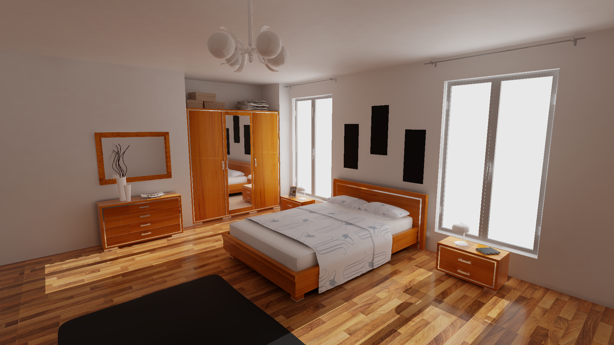
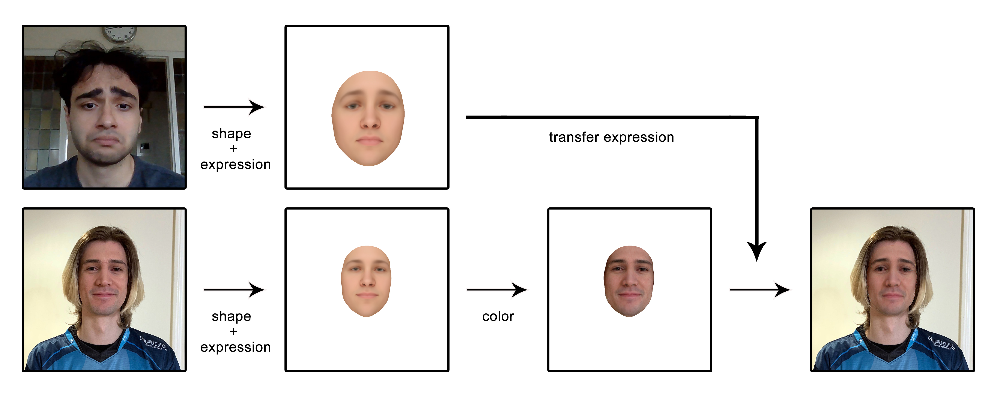
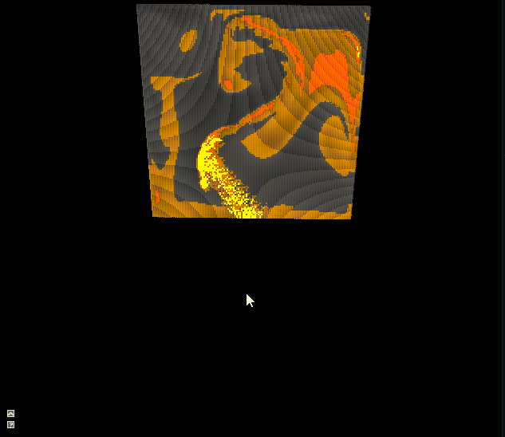
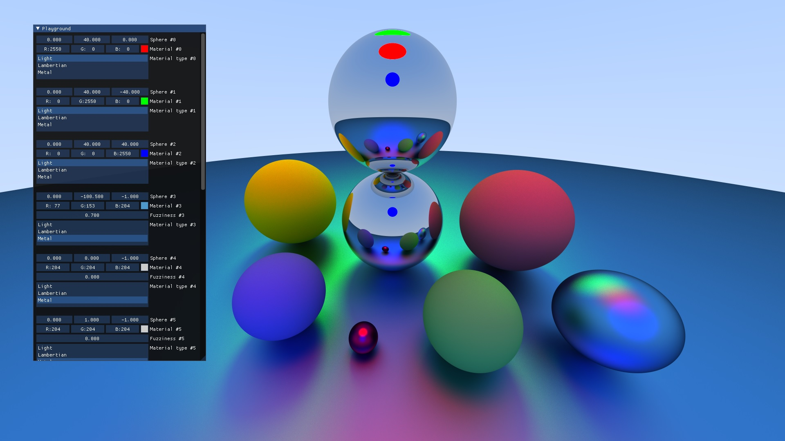
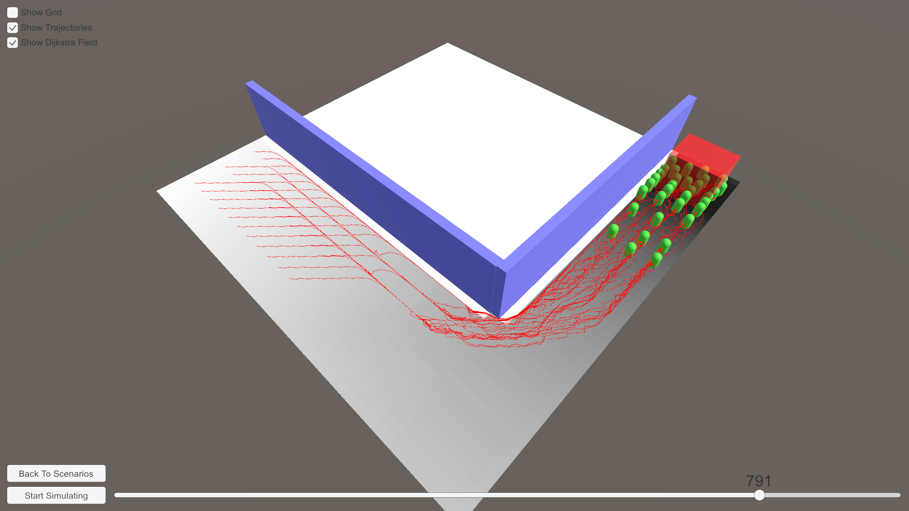

Berk Emre Saribas
3D graphics engineer and game developer.
Graphics engineer and game developer. Currently working at EA - Maxis as a software engineer.
Before, I worked at The Forge, GritWorld and Gram Games (Zynga). See my CV here.
Here are a bunch of my personal projects:
Real-time Volumetric Clouds
 Inspired by Horizon Zero Dawn, I’ve implemented volumetric clouds based on Guerilla’s talk. I’ve used the engine I developed for my thesis to implement this project. After the theis, I implemented a frame/render graph to quickly work on real-time effects like this one.
Inspired by Horizon Zero Dawn, I’ve implemented volumetric clouds based on Guerilla’s talk. I’ve used the engine I developed for my thesis to implement this project. After the theis, I implemented a frame/render graph to quickly work on real-time effects like this one.
Master’s Thesis - Precomputed Semi-dynamic Global Illumination with Real-time Raytracing
 In this thesis, I extend the precomputed diffuse GI method with real-time ray-tracing. The extended version supports dynamic occluders and emitters than can contribute to the diffuse illumination. I also implement two different real-time specular reflection methods, to extend diffuse GI with specular illumination GI.
2D to 3D - Face Reconstruction
 A C++ library that takes a 2D image input containing a face, and reconstructs it in 3D. Expressions retrieved from a reconstruction can be transferred to other reconstructions.
Phyzix
 A university physics project, domenstrating the following:
- Mass-spring simulation
- Rigid-body simulation
- Heat diffusion simulation
- SPH fluids simulation
- Stable fluids simulation
Graphics Playground - D3D11 Compute Shader Ray Tracer
 D3D11 Compute shader implementation of Ray Tracing in One Weekend.
Visualization and Simulation of Crowds in Unity

- Implemented path finding with Dijkstra’s path finding algorithm and distance fields.
- Implemented a simplified version of Optimal Steps Model for pedestrian movements.
- Created an user interface and implemented visualization for trajectories, distance field. Also implemented a playback controller. Mentioned features make use of mesh generation and line rendering.
- Provided an easy to use interface to create experiment scenes.